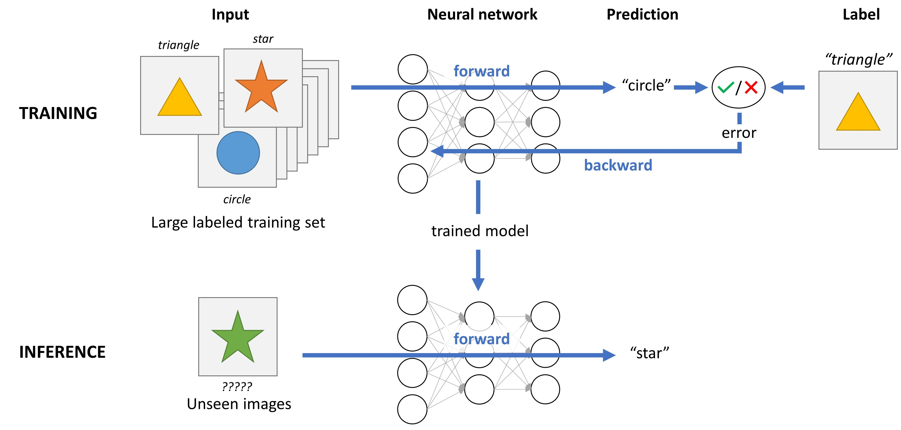
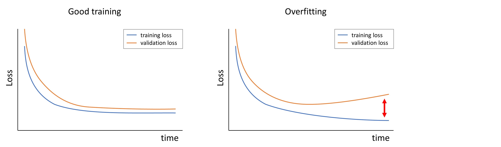
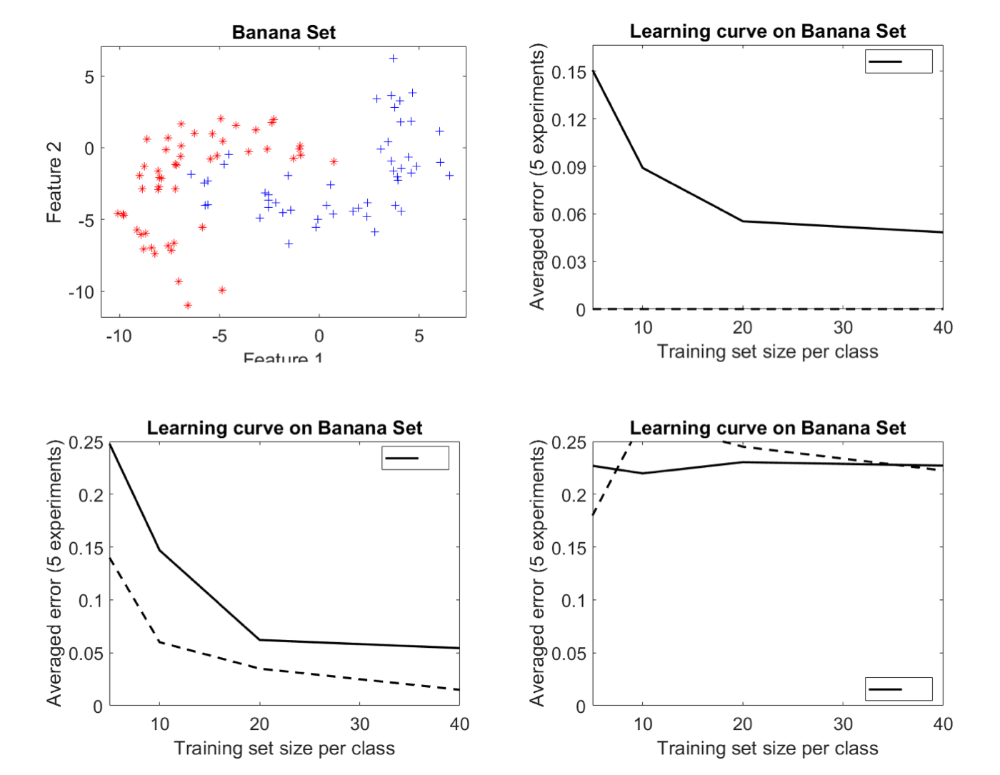

Topic 2.3: Generalization and overfitting¶
This notebook combines theory with exercises to support the understanding of generalization and overfitting in neural networks. Implement all functions in the code folder of your cloned repository, and test it in this notebook after implementation by importing your functions to this notebook. Use available markdown sections to fill in your answers to questions as you proceed through the notebook.
Contents:
Generalization and overfitting 2.1 Learning curves 2.2 Learning curves - pen and paper exercise 2.3 Feature curves (OPTIONAL) 2.4 Distances in high dimensions (OPTIONAL) 2.5 More surprising properties of high dimensions (OPTIONAL) 2.6 :math:`k-different features, different samples (OPTIONAL) <#k_different_features>`__
[5]:
%load_ext autoreload
%autoreload 2
The autoreload extension is already loaded. To reload it, use:
%reload_ext autoreload

1. Learning process of a neural network¶
Before learning about generalization and overfitting, let’s first understand how a neural network learns. As humans we are capable of learnign many tasks throughout our lives. We can for example easily distinguish cats from dogs in a picture, but we were not able to do this as newborns and we had to learn this along the way. In our upbringing, constant feedback is given by parents and teachers to make sure that we can recognize different common animals or objects. So after a while you simply know what animal you are seeing by taking a quick look at the animal. However, we find it more difficult to recognize rare animals, the reason for this is that we did not see many examples of these rare animals.
This principle is exactly the same for a neural network. During the training process, known data is fed into the neural network, and the network makes a prediction about what the data represents. Any error in the prediction is used as feedback. As the training process continues, the network weights are adjusted (using backpropagation) until the network is making accurate predictions. Then the model is ready and can be used to make predictions for unseen images in the inference stage. This process is visualized in the figure below. As you can see, the model is only trained on three classes of images (triangles, stars and circles), therefore it will never be able to classify other shapes. However, the model is able to classify a green star as a star even though this exact color star is not seen during training, but simply because the training data consists of a large variety of colors.

2. Generalization and overfitting¶
Generalization and overfitting are crucial terms in machine learning algorithms. Generalization describes a model’s ability to make accurate predictions based on new data previously absent from the training dataset. Model’s generalization capability can be thought of as a success measure in making accurate predictions. However, if a model has been trained too well on training data, it will make inaccurate predictions on new data. The opposite holds as well. Underfitting can happen when a model has been trained insufficiently.
In practice, three datasets are used in deep learning research: 1. Training set - The training set is used for training the model (i.e. iteratively updating the network weights to minimize the error). 2. Validation set - At the inference phase, the validation set is used for two purposes: * Check for model overfitting: Sometimes the model is able to ‘remember’ all the training examples, which means that the model will not generalize well to unseen data at the inference phase. Overfitting can be detected by inspecting the training and validation loss over time. The loss function is often based on the error between the model prediction and the desired output, this means that you want to minimize the loss function. As you can see in the figure below, the training and validation loss show the same pattern when the model is not overfitting (left figure). When the model is overfitting to the training data, you see that the training and validation loss start to diverge after a certain number of epochs (right figure), this tells you that the model is not generalizing well to new data. 
* Tuning of model parameters: Many parameters (e.g. number of layers, loss function, learning rate, etc.) influence the performance of the model for a specific task. The performance can often be measured with a quantitative metric because the desired output (ground truth) is known for the validation set. By systematically adapting model parameters and evaluating the performance, the optimal parameters can be chosen.
Test set - The test set is used to show the final performance of the model on a unseen set. This performance can give an indication of how the model will perform when it is implemented in for example the clinic (with the assumption that the test set resembles the real clinical data in terms of population and acquisition protocol).
### 2.1. Learning curves
Let’s investigate how different sizes of the training set affect the results. So far you have been using a training set of 100 samples. Are these good values? Maybe we can do with less samples, or we can improve if we add more?

Exercise 2.1.1:¶
Use the provided script learning_curve() in SECTION 2 of the segmentation_tests.py module. Run the script, which will produce a plot of the error against the size of the training set. What training set size would you say is good enough, i.e. the performance does not increase a lot afterwards? What about if you load the brain data instead of the Gaussian datasets?
[1]:
%matplotlib inline
import sys
sys.path.append("../code")
from segmentation_tests import learning_curve
learning_curve()
train_size = 1, iter = 0
train_size = 1, iter = 1
train_size = 1, iter = 2
train_size = 3, iter = 0
train_size = 3, iter = 1
train_size = 3, iter = 2
train_size = 10, iter = 0
train_size = 10, iter = 1
train_size = 10, iter = 2
train_size = 30, iter = 0
train_size = 30, iter = 1
train_size = 30, iter = 2
train_size = 100, iter = 0
train_size = 100, iter = 1
train_size = 100, iter = 2
train_size = 300, iter = 0
train_size = 300, iter = 1
train_size = 300, iter = 2
Exercise 2.1.2:¶
Modify the learning_curve() script so that it also plots the training error.
[2]:
%matplotlib inline
import sys
sys.path.append("../code")
from segmentation_tests import learning_curve
learning_curve()
train_size = 1, iter = 0
train_size = 1, iter = 1
train_size = 1, iter = 2
train_size = 3, iter = 0
train_size = 3, iter = 1
train_size = 3, iter = 2
train_size = 10, iter = 0
train_size = 10, iter = 1
train_size = 10, iter = 2
train_size = 30, iter = 0
train_size = 30, iter = 1
train_size = 30, iter = 2
train_size = 100, iter = 0
train_size = 100, iter = 1
train_size = 100, iter = 2
train_size = 300, iter = 0
train_size = 300, iter = 1
train_size = 300, iter = 2

Question 2.1.1:¶
From what you learned in class, how do you expect the training error plot to look like for 1-NN classifier?
Type your answer here
Question 2.1.2:¶
The 1-NN classifier suffers from overfitting: there is a gap between the training error and the test error. Try other values of \(k\) and observe how the learning curves change. What happens?
Type your answer here
2.2. Learning curves: pen and paper exercise¶
Consider the following figures, which show the so called “banana dataset”, and learning curves A, B and C for this dataset. These learning curves are made by two of the following three classifiers: a nearest mean classifier, a 1-nearest neighbor classifier, and a 5-nearest neighbor classifier.

Figure 2.2.1: top left: dataset, top right: learning curve A, bottom left: learning curve B, bottom right: learning curve C
Question 2.2.1:¶
Which learning curve belongs to which classifier? Explain why you think this is the case.
Type your answer here
Question 2.2.2:¶
Which learning curve do you think will improve the most if we were to add more training samples? Why?
Type your answer here
### 2.3. Feature curve (OPTIONAL)
Exercise 2.3.1:¶
In this exercise we will see how the number of features influences the classifier, use the provided feature_curve() script in SECTION 2 of the segmentation_tests.py module for this. The script simply selects the first 1, 2 features and so forth. If you want, you can sort your features first, so they will be added in the order you specified. For example:
feature_order = [3, 1, 2, 5, 4]
X = X[:, feature_order]
Question 2.3.1:¶
What do you see happening to the errors as the number of features increases? Do you get the best performance with all features, or with less? (This depends on which features you have).
Type your answer here
[ ]:
%matplotlib inline
import sys
sys.path.append("../code")
from segmentation_tests import feature_curve
feature_curve()
Question 2.3.2:¶
What do you see happening to the errors as the number of features increases? Do you get the best performance with all features, or with less? (This depends on which features you have).
Using np.random.randn(), replace the data by completely noisy features and run the script again. What happens to the errors now? What behavior of the train error might be surprising?
[ ]:
%matplotlib inline
import sys
sys.path.append("../code")
from segmentation_tests import feature_curve
feature_curve(use_random=True)
Type your answer here
Question 2.3.3:¶
Go to the website http://tylervigen.com/spurious-correlations and look at the different plots. Explain in your own words, what the previous part of this question, and the phenomenon you see on the website, have in common.
Type your answer here
### 2.4. Distances in high dimensions (OPTIONAL)
You might already have the idea that data in high dimensional feature spaces has characteristics that do not correspond to our intuition of how things behave in 2D or 3D. This exercise looks at one of the reasons this happens, by looking at the distribution of the distances.
Exercise 2.4.1:¶
Use the provided high_dimensions_demo() script SECTION 2 of the segmentation_tests.py module to generate 100 samples from a 2D Gaussian distribution, compute all pairwise Euclidean distances and make a histogram of the distances.
[13]:
%matplotlib inline
import sys
sys.path.append("../code")
from segmentation_tests import high_dimensions_demo
high_dimensions_demo()
2D Gaussian distribution
Mean = 1.7119170239464965, Max = 6.124070966243419, Mean nn = 48.76
1000D Gaussian distribution
Mean = 44.338243877607304, Max = 48.60148649483076, Mean nn = 46.5
Question 2.4.1:¶
What average, and what maximum distance do you observe? What is the average nearest neighbor distance?
Type your answer here
Question 2.4.2:¶
The second subplot of the resulting figure above shows the result when a 1000D Gaussian distribution is used instead of a 2D one. How do the distances change? What does this tell you about finding nearest neighbors in high dimensions?
Type your answer here
### 2.5. More surprising properties of high dimensions (OPTIONAL)
Think about 100 uniformly distributed samples on a unit line, unit square, unit cube, etc. If it helps your thinking, think about 100 people standing on a line of 100 meters, on a field of 100x100, or spread out in a 100x100x100 building.
Question 2.5.1:¶
Let’s take the line. How far does a person on average need to travel along the line, to find 1% of the others (i.e. 1 person)?
Type your answer here
Question 2.5.2:¶
What about the square - how far does a person need to travel in each direction to find another person? Now it is 10 meters - by travelling 10 meters in each direction, you have covered 100\(m^{2}\), which is 1% of the total space available.
Type your answer here
Question 2.5.3:¶
We can calculate this for any dimensionality with the formula \(r^m = V\), where \(r\) is the fraction that needs to be travelled (i.e. 0.01 for 1%), \(m\) is the dimensionality, and \(V\) is the volume of the data we are searching for (again 0.01 in this example).
Have a look at the output plots of high_dimensions_demo(), which shows the fraction travelled against the number of dimensions, for 1 to 10 dimensions. How far do you need to travel to find a nearest neighbor in 10 dimensions? What does this mean for the concept of “neighborhood” in high-dimensional spaces?
Type your answer here
### 2.6. \(k\)-Different features, different samples (OPTIONAL)
Recall that \(k\)-NN is sensitive to scaling. Because of this, some features will have a much bigger influence on the classifier than the others. To remove such differences, features are often normalized to “zero mean, unit variance”, as in the normalize_data function. This can be done in two ways:
Normalizing ALL data, before splitting it up into training and test data
Normalizing the training data, and then applying the same normalization to the test data, by providing the test data as the second input to the
normalize_datafunction.
It is NOT correct to normalize the training and test data separately. To understand why, think of the Alice/Bob/Carol data as the training set, and Dave and Earl as the test set:
person |
weight (kg) |
height (m) |
|---|---|---|
Alice |
55 |
1.6 |
Bob |
60 |
1.7 |
Carol |
65 |
1.8 |
person |
weight (kg) |
height (m) |
|---|---|---|
Dave |
65 |
1.8 |
Earl |
75 |
1.9 |
Question 2.6.1:¶
What goes wrong if you normalize these datasets separately?
Type your answer here
So far you have been using all the features for the classifier, but it is possible to only select a subset. You can experiment with this as follows:
# Normalize data
train_data, test_data = seg.normalize_data(train_data, test_data)
# Define which features to select
ix = [1, 2, 4]
# Train the classifier
pred_labels = seg.knn_classifier(train_data[:, ix], train_labels, test_data[:, ix], k=1)
Question 2.6.2:¶
Think about the scatterplots you created last week, and which features seemed to be better for the brain/non brain problem. Experiment with selecting one or more of these features. Do not forget to normalize your data first. Can you improve your classifier performance? How many possible combinations of features are there in total?
Type your answer here
Exercise 2.6.1:¶
To avoid trying all combinations you could create a “forward feature selection” loop where you first select the best feature, based on its performance on the training set (NOT the test set - you can only use it to evaluate the final classier), then select the feature that gives the best combination with the first feature and so forth.
Exercise 2.6.2:¶
Instead of selecting features, let’s experiment with extracting features with PCA. For a training and a test set, this is similar to scaling features: perform PCA on all data together, or perform PCA only on the training set, and then apply the same rotation to the test set:
X_pca, v, w, fraction_variance = seg.mypca(train_data)
test_pca = v.T.dot(test_data.T)
test_pca = test_pca.T
Question 2.6.3:¶
How many principal components do you need to retain at least 0.9 fraction of variance? How does the performance compare to using all features, and to using your feature subset you selected yourself?
Type your answer here